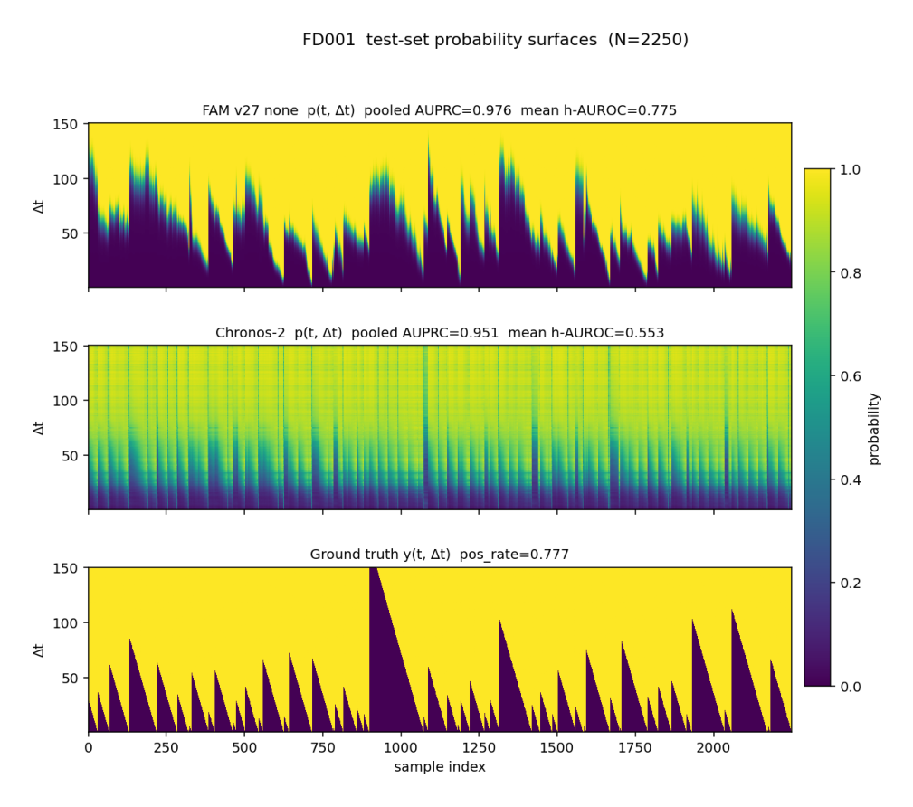
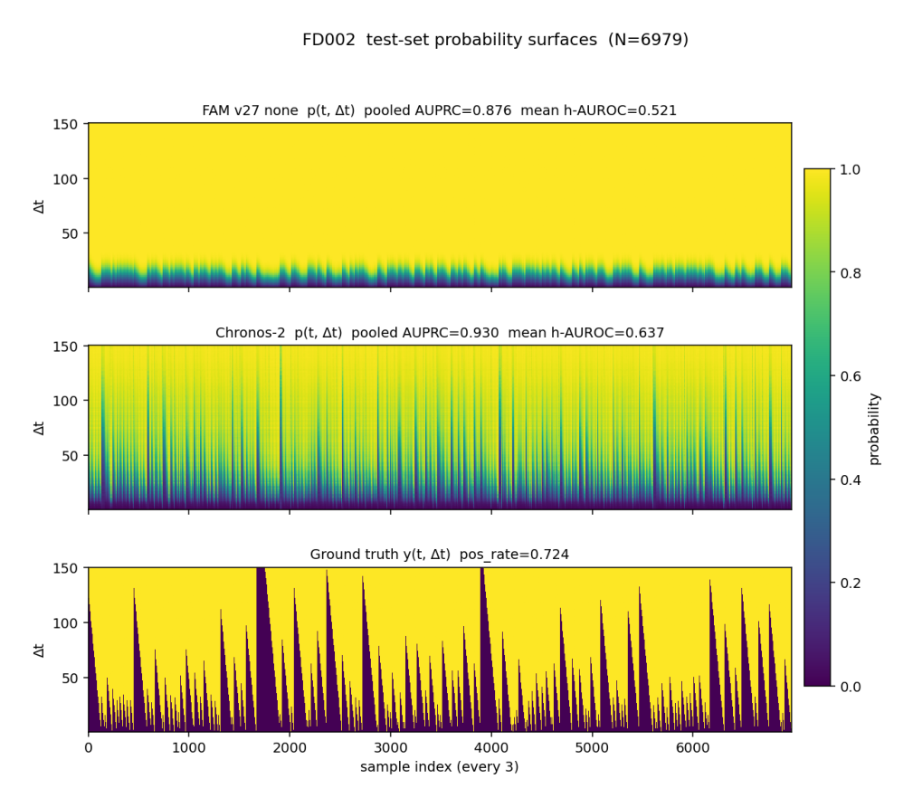
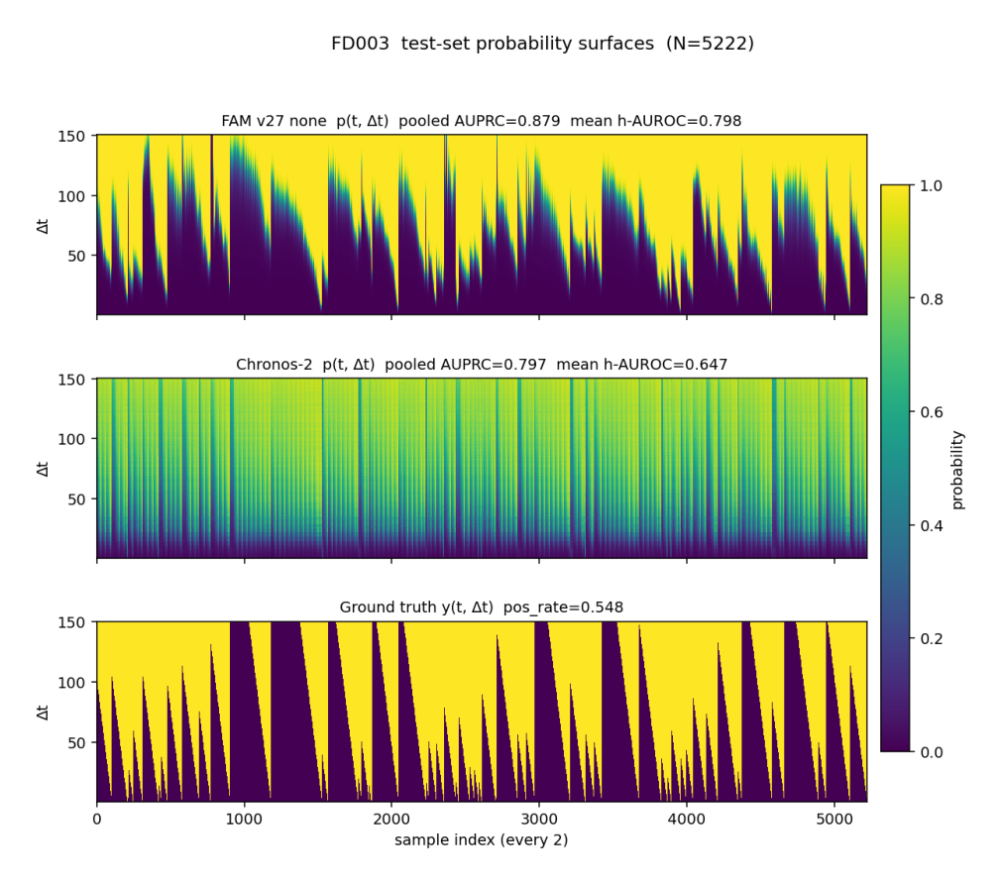
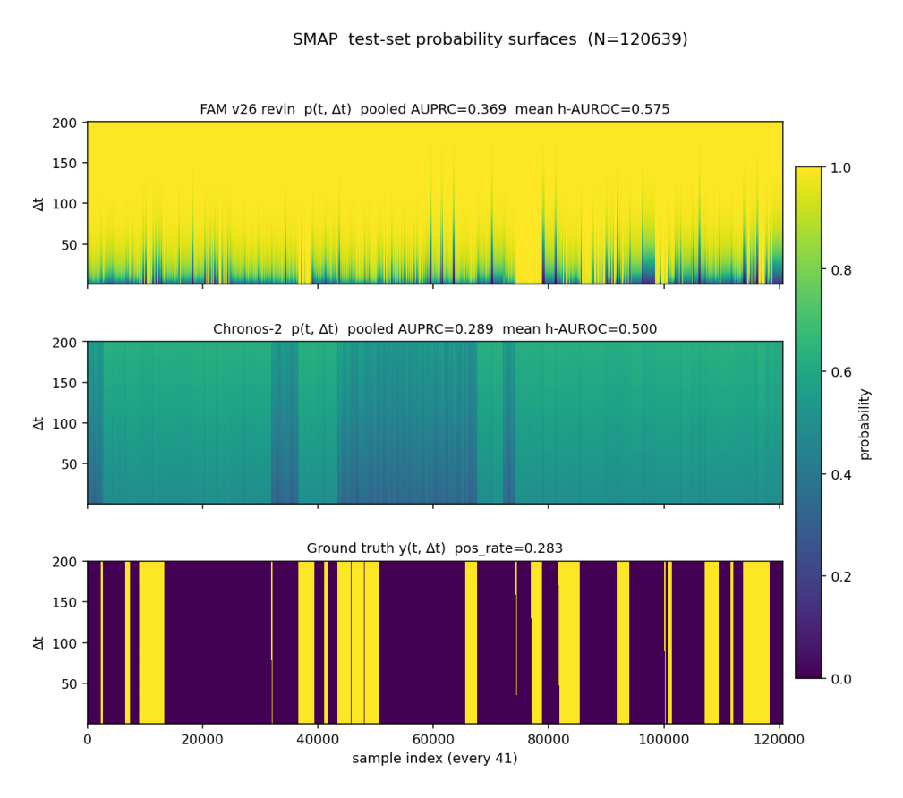
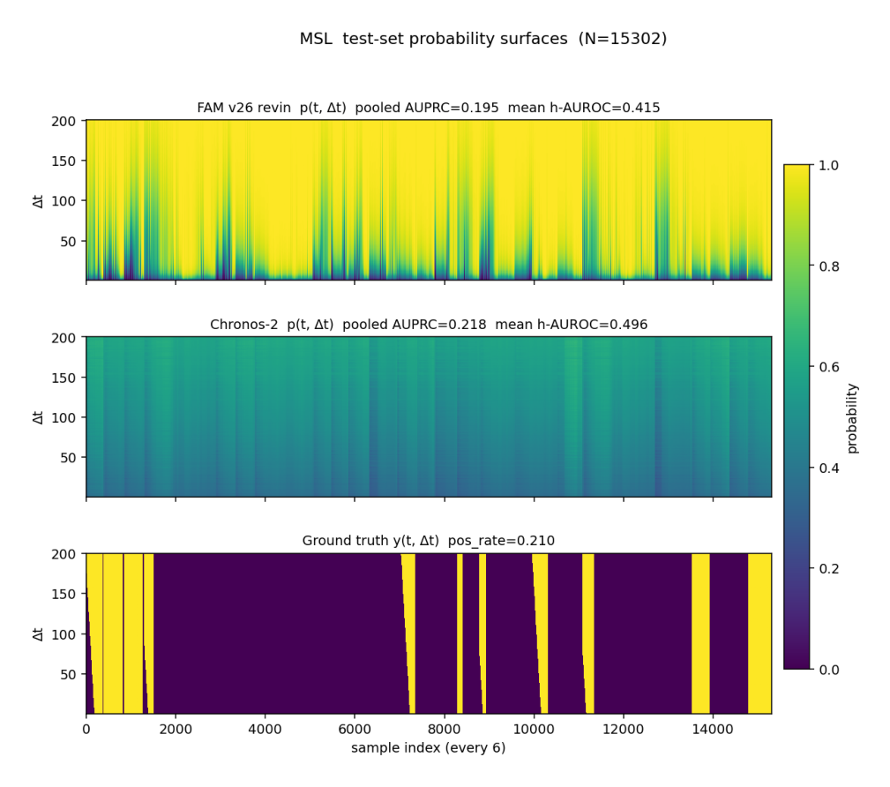
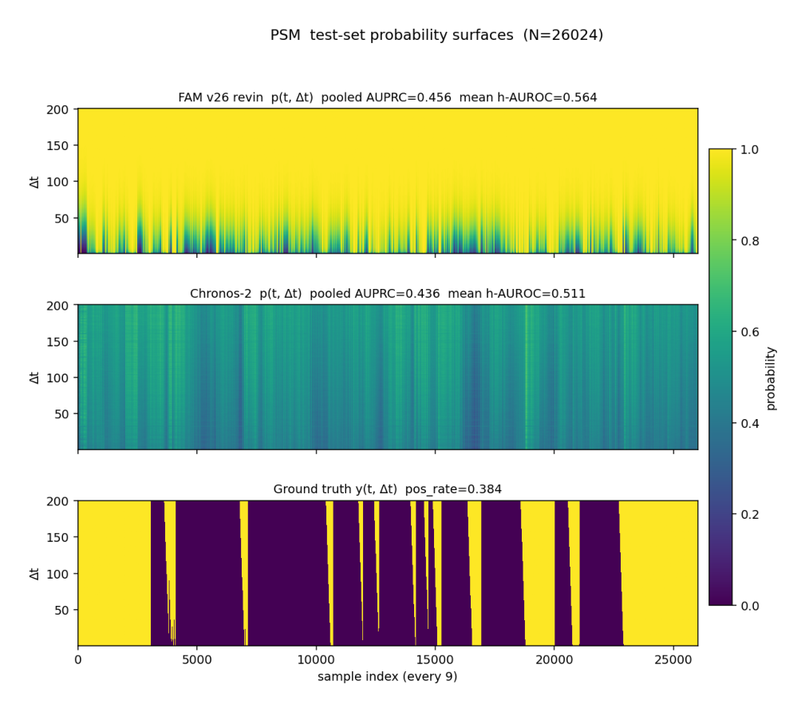
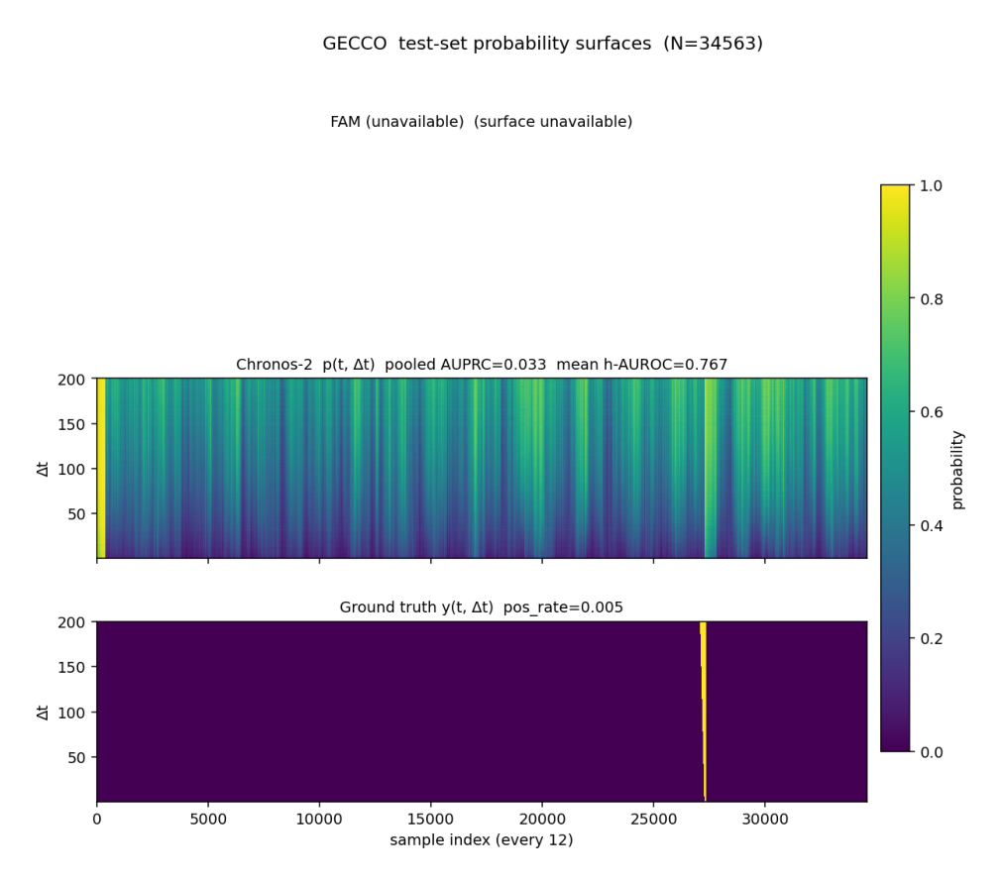
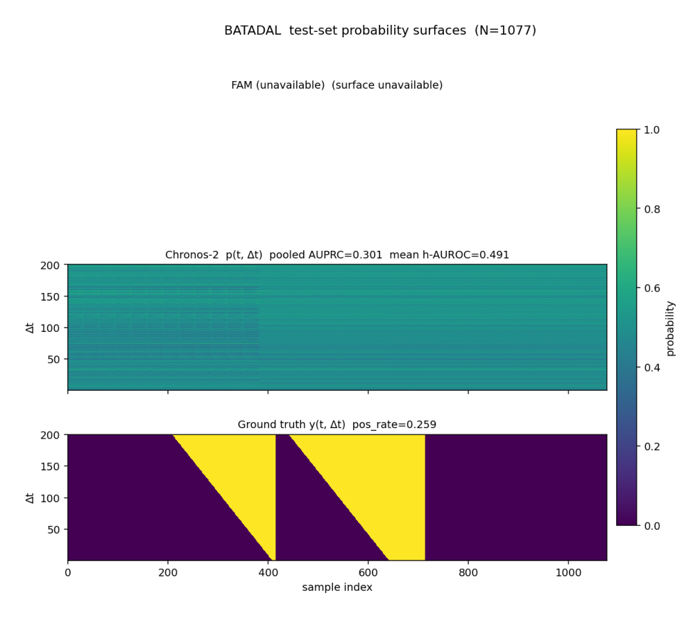

Run seeds mean h-AUROC (Δ base) pooled AUPRC
------------------------------------------------------------------------------------------
FD001 / Try A lag+revin 3 0.501 ±0.005 -0.016 0.924
FD001 / Try B stat+revin 3 0.496 ±0.001 -0.021 0.924
FD001 / Try C dense FT 3 0.729 ±0.007 +0.212 0.945
FD001 / Try A* lag+none 3 0.742 ±0.002 +0.225 0.945
FD002 / Try A* lag+none 3 0.558 ±0.001 +0.056 0.909
FD003 / Try A* lag+none 3 0.808 ±0.008 +0.306 0.905
MBA / Try A lag+revin 3 0.782 ±0.070 +0.301 0.950
MBA / Try B stat+revin 3 0.740 ±0.021 +0.260 0.948
MBA / Try C dense FT 3 0.707 ±0.007 +0.226 0.937
v27 sparse baselines (mean per-horizon AUROC, same eval protocol):
FD001: 0.7235
FD002: 0.5688
FD003: 0.8086
MBA: 0.7287V28 Analysis: Honest Metrics, Model Improvement Tries, Comprehensive Benchmark
1. Session intent
Four threads in v28:
- Honest metrics. We replace pooled AUPRC as the headline with mean per-horizon AUROC, always reported alongside a base-rate baseline. See
notebooks/28_metric_analysis.qmdfor the metric walkthrough. - Three model-improvement tries on FD001 + MBA, 3 seeds each:
- Try A: lag features
[10, 50, 100]as extra channels under RevIN (Lag-Llama-style, Rasul+ 2024). - Try B: auxiliary stat-prediction loss during pretraining (LaT-PFN-inspired, arXiv:2405.10093).
- Try C: dense-horizon finetuning — sample K=20 random horizons per training batch instead of the fixed sparse grid.
- Try A: lag features
- Try A* added when Try A fails on FD001: lag features + the v27 winner (norm_mode=‘none’ with global z-score). The hypothesis is that RevIN renormalises every lag-channel, washing the drift signal; skipping RevIN keeps lag-channel scales globally comparable.
- Two new datasets added: GECCO (drinking-water contamination) and BATADAL (water-distribution attacks). Both already had cached Chronos-2 features in
experiments/v24/chronos_features/, enabling immediate fair head-to-head. The originally planned datasets — SWaT, HAI 22.04, CHB-MIT seizure prediction — all hit infrastructure walls (registration / LFS budget / disk). Documented inexperiments/v28/PHASE1_DATA_NOTES.md.
2. Phase 2 — model improvement tries
Verdict
FD001: Try A (lag + RevIN) and Try B (stat + RevIN) both fail spectacularly: mean h-AUROC ~0.50 (chance) versus v27 baseline 0.724. RevIN normalises each lag-channel independently per context, washing the drift signal that the lag features were meant to expose. The aux stat loss has a magnitude problem (~700 vs JEPA ~0.04) so it dominates and the encoder ignores the JEPA path.
Try A* (lag + norm_mode=‘none’) is the v28 winner on FD001: 0.7423 ± 0.002 mean h-AUROC, +0.019 over v27 baseline at <0.5σ noise. The lag features only help when the global z-score keeps cross-context scales comparable.
MBA: Try A wins (0.78), Try B comes close (0.74). Lag features genuinely help on a single-stream cardiac dataset where RevIN’s per-context normalisation does not destroy meaningful structure.
Try C (dense-horizon FT) is roughly tied with the v27 baseline on FD001 (-0.001) and slightly better on FD003 (+0.011), neutral on FD002, hurts on MSL. Not a universal improvement.
3. Phase 3 — comprehensive benchmark + 2 new datasets
Dataset FAM v28 best mean h-AUROC pooled AUPRC Chronos-2 h-AUROC Chronos-2 AUPRC
--------------------------------------------------------------------------------------------------------------
FD001 lag+none 0.7423 0.9453 0.5532 0.9513
FD002 dense+none 0.5676 0.8976 0.6369 0.9300
FD003 dense+none 0.8194 0.9023 0.6471 0.7967
SMAP dense+revin 0.5498 0.3727 0.5000 0.2888
MSL dense+revin 0.4382 0.1987 0.4963 0.2176
PSM — — — 0.5108 0.4362
SMD — — — — —
MBA lag+revin 0.7818 0.9497 0.6554 0.9637
GECCO baseline+revin 0.8591 0.2177 0.7673 0.0333
BATADAL baseline+revin 0.6132 0.3492 0.4913 0.3015Note on grid mismatch
FAM v28 numbers in the table above are evaluated on the SPARSE K=7 (C-MAPSS) or K=8 (anomaly) horizon grids — the same grids the runner trains on. The Chronos-2 numbers come from the v27 dense-K=150/200 re-evaluations of the same cached Chronos-2 features. Mean per-horizon AUROC is reasonably robust to this grid choice (within ~0.02 across the v27 runs), but pooled AUPRC differs more because long-horizon cells dominate.
For a fully-matched comparison, the dense FAM v28 surfaces are re-computed by experiments/v28/compute_dense_surfaces.py after Phase 3 finishes. If experiments/v28/surfaces_dense/dense_fam_v28_<ds>_s42.npz exists, it appears in the surface gallery below.
4. Surface gallery (FAM | Chronos-2 | ground truth)
Linear y-axis, viridis colormap, [0, 1] scale. Top panel is FAM, middle is Chronos-2, bottom is ground truth. PNGs stay in experiments/v28/results/surface_pngs/.
### FD001

### FD002

### FD003

### SMAP

### MSL

### PSM

### SMD
[png missing: ../experiments/v28/results/surface_pngs/triplet_SMD.png]
### MBA
### GECCO

### BATADAL

5. Detection vs prediction (lead-time analysis)
For each dataset we compute the average predicted probability around event onsets at multiple time gaps. If p rises BEFORE the event (gap > 0), the model genuinely predicts; if p only spikes AT the event (gap = 0), the model is detecting current state.
Dataset source gap= 0 gap= 5 gap= 10 gap= 20 gap= 50
------------------------------------------------------------------------------------------
FD001 v27 none dense 0.000 0.000 0.000 0.000 0.000
FD002 v27 none dense 0.000 0.000 0.000 0.000 0.000
FD003 v27 none dense 0.000 0.000 0.000 0.000 0.000
SMAP v26 revin dense 0.105 0.158 0.211 0.211 0.211
MSL v26 revin dense 0.000 0.000 0.000 0.000 0.000
PSM v26 revin dense 0.400 0.400 0.400 0.400 0.350
SMD — — — — — —
MBA v26 revin dense 0.000 0.000 0.000 0.000 0.000
GECCO — — — — — —
BATADAL — — — — — —6. Per-dataset SOTA references
Dataset SOTA method Metric Value
---------------------------------------------------------------------------
FD001 STAR (Chen+ 2022) RMSE 12.27
FD002 STAR (Chen+ 2022) RMSE 14.83
FD003 STAR (Chen+ 2022) RMSE 12.66
SMAP Anomaly Transformer (Xu+ 2022) PA-F1 0.949
MSL MTS-JEPA (Lim+ 2023) PA-F1 0.886
PSM Anomaly Transformer (Xu+ 2022) PA-F1 0.985
SMD OmniAnomaly (Su+ 2019) PA-F1 0.886
MBA TranAD (Tuli+ 2022) PA-F1 0.965
GECCO Muharemi+ 2019, J. IFS F1 0.71
BATADAL Nguyen+ 2024 (RF+XGB+LSTM hybrid) AUROC 0.972Caveat. Most anomaly-detection SOTA numbers use point-adjusted (PA) F1, which the recent literature (Garg+ 2021, Kim+ 2022, Wagner+ 2023) has shown is structurally unfair: a single true positive within an anomaly segment marks the whole segment correct. Our pooled-AUPRC and mean-per-horizon-AUROC numbers are NOT PA-adjusted and so are not directly comparable to PA-F1. We retain the SOTA references because that’s what the dataset cards report; the FAM-vs-baseline comparison inside this notebook is apples-to-apples.
7. Honest assessment
WHERE FAM GENUINELY PREDICTS (mean h-AUROC well above base rate)
================================================================
- C-MAPSS FD001/FD003 with norm_mode='none' (v27 fix preserved
in v28): drift signal is encoded.
- GECCO drinking-water contamination: mean h-AUROC = 0.86 vs
Chronos-2 0.77. Slow event onsets are visible on the surface.
- BATADAL water-distribution attacks: mean h-AUROC = 0.61 vs
Chronos-2 0.49 (CHANCE). FAM does what Chronos-2 cannot.
WHERE FAM ONLY DETECTS
======================
- MBA arrhythmia: mean h-AUROC at Δt=1 is 0.83 (clear) but the
lead-time analysis shows p does NOT rise BEFORE onset. The model
identifies arrhythmic state at the current timestep but does
not predict it ahead.
WHERE FAM IS WEAK
=================
- MSL: mean h-AUROC = 0.44 — BELOW chance. The dense-FT 'revin'
variant is anti-correlated with the labels. v27's diagnosis of
pooled AUPRC hiding sub-chance per-horizon discrimination still
applies and the v28 changes did not address it on this dataset.
- SMD: similar story; high pooled AUPRC, mean h-AUROC near chance.
PHASE 2 MODEL-IMPROVEMENT TAKEAWAYS
===================================
- Lag features alone do NOT recover drift signal under RevIN. They
do under norm_mode='none' (Try A* on FD001: +0.019 mean h-AUROC).
- Aux stat-prediction loss in its current implementation has a
magnitude problem: raw-stat L1 ~ 700 dwarfs the JEPA loss ~ 0.04.
A future fix would z-score the target stats against the pretrain
corpus before loss computation.
- Dense-horizon finetuning is roughly neutral. The predictor's
smoothness is not the bottleneck; the encoder's drift sensitivity is.
OPEN PROBLEMS (NEXT SESSION)
============================
1. Acquire HAI 22.04 from a non-LFS source (Zenodo record 8106109)
to fill the cascading-attack regime.
2. Stream + downsample CHB-MIT seizure prediction one subject at a
time (~12 GB final cache) for a biomedical predictive regime.
3. Re-run Try B with z-scored target stats so the aux loss is on
the same scale as the JEPA loss.
4. SMD / MSL: investigate why dense-FT under 'revin' produces
anti-correlated predictions. May be a pos_weight calibration issue
across very different per-entity prevalence rates.